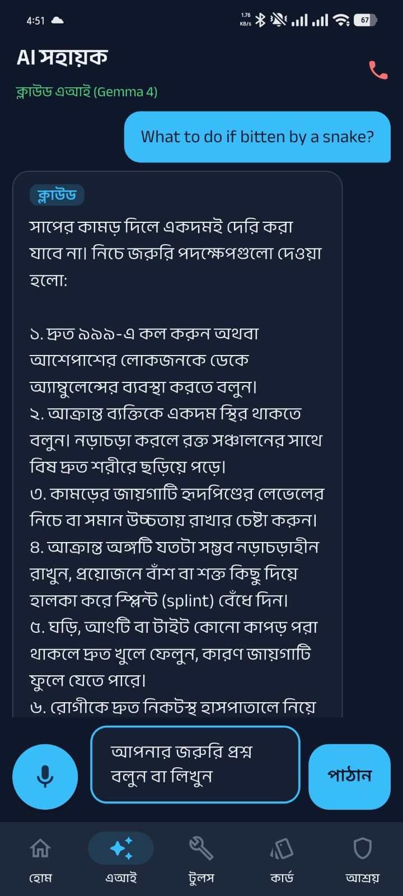
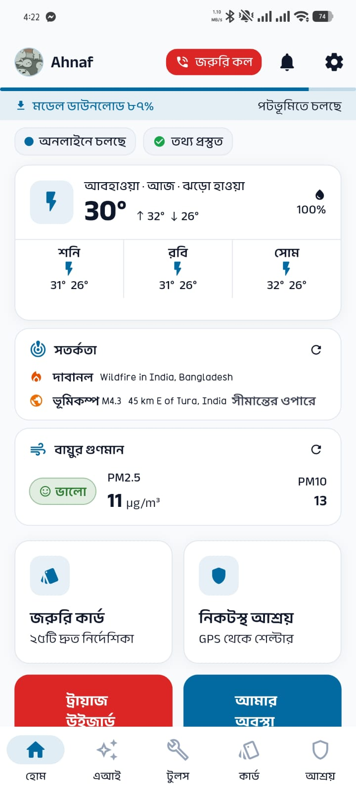
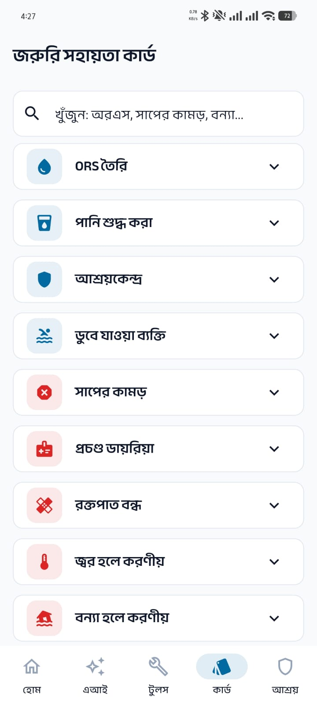
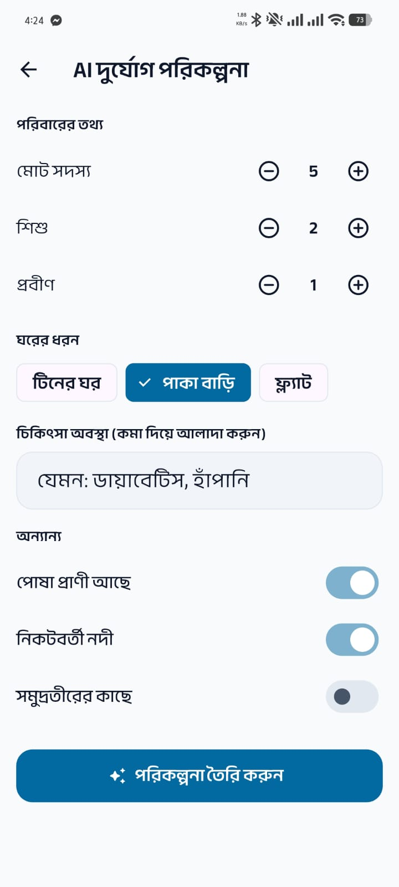
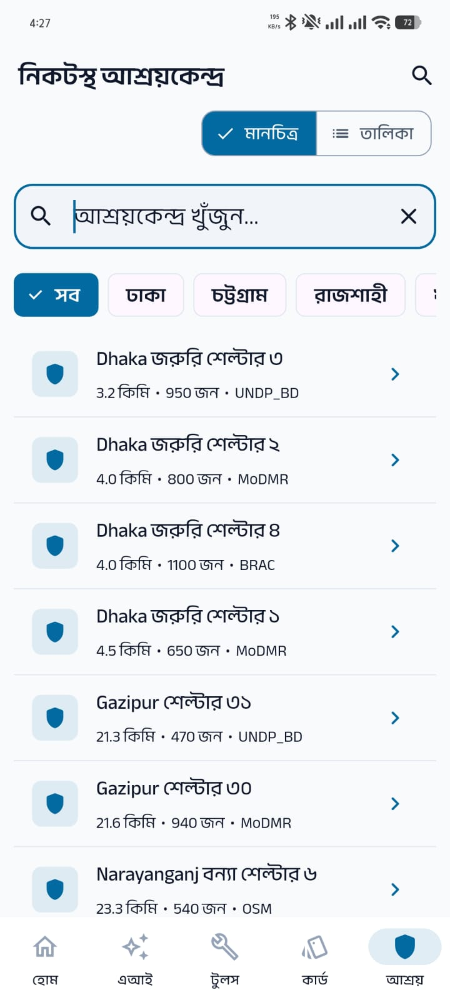
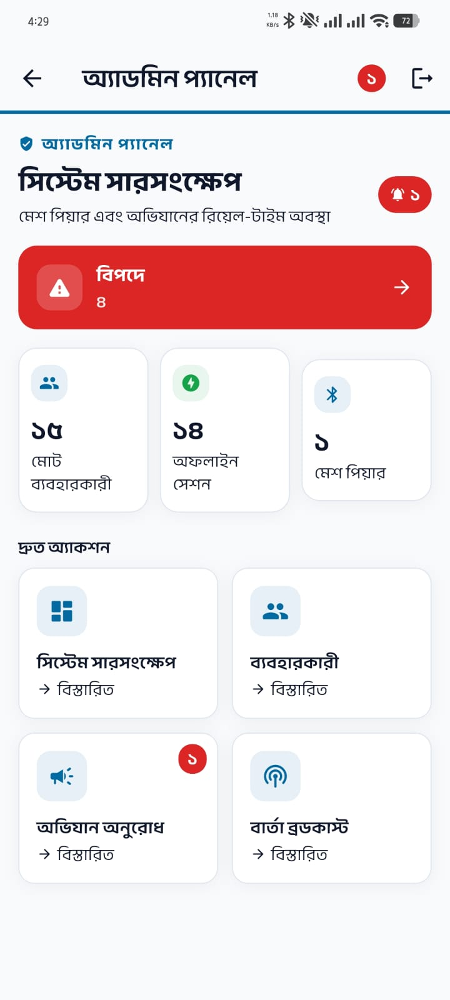

Chatbots, translation apps and web helplines answer.
Hotlines connect and alerts arrive by SMS.
Someone with a signal can look things up for you.
Every cloud assistant goes dark at the same moment.
A leaflet or a broadcast SMS cannot answer your situation.
The window before responders arrive is exactly when first-aid and safe-water decisions save lives.
Official guidance is English or dense Bangla text — unreadable at speed by rural, elderly and low-literacy users under stress. Meanwhile dangerous folk myths persist and actively harm: cut a snakebite, drink untreated flood water, stop drinking when you have cholera.
Chatbots, translation apps and helplines are all network-bound. They fail together, at the worst moment, for the same reason.
runs the model on the phone. Airplane mode is the design target, not a degraded mode.
A leaflet or a broadcast SMS says the same thing to everyone. It cannot take "my child has diarrhoea and the water is dirty" and return the next step.
answers the specific question, by voice, in Bangla — and reads the answer back aloud.
An ungrounded model hallucinates dosages and diagnoses. In first aid that is not a quality problem, it is a safety problem.
answers only from a verified corpus, and never diagnoses or prescribes.
Chat, family disaster planner, emergency-kit generator, risk assessment, situation summary, shelter brief, triage wizard, 26 quick cards, shelter map, emergency directory.
Live hazard feeds from GDACS, NASA EONET and USGS; Open-Meteo weather, marine surge and air quality; OSRM routing; Nominatim and Overpass search. Every one fails soft.
Phones form a mesh among themselves — text, photos, video, voice notes and full-duplex voice calls, plus a multi-hop SOS relay.

"Where is the nearest shelter?" is answered by pure Dart: haversine distance over the 263 bundled shelters. It runs before every other tier — the fastest path serves the most time-critical question.
Retrieved corpus chunks and the question go to the local model through LiteRT-LM — the normal path, and the only one that works in airplane mode.
If the device is online and the local model is still downloading or has failed, the same grounded prompt goes to Gemini, with key rotation and model fallback.
No generation at all: the human-verified passage is shown as written. Less fluent, and impossible to hallucinate.
If nothing above produced an answer, the app says so plainly and offers the national emergency number. It never shows a blank bubble or a stack trace.
It used to run a full inference just to extract one integer — how many shelters the user asked for — and on a miss it ran a second one. That was 30–50 seconds on mid-range hardware for the single most urgent question the app answers. It is now a parser and a distance sort: milliseconds, and it cannot hallucinate a shelter that does not exist.
A classifier reads the question first. For a choking or bleeding query, extended reasoning is switched off — a correct answer in 40 s is worse than a good answer in 8 s. Generation is capped at 90 seconds with a fresh session per query, so a wedged model degrades into Tier 3 rather than hanging the screen.
A seven-organisation source whitelist: WHO, BDRCS, IFRC, CDC, UNICEF, MoDMR and BMD. Nothing enters the corpus from the open web, and every passage carries the document it came from — so a reviewer can check any answer against its origin.
ORS · diarrhoea · water · hygiene · fever · bleeding · CPR · drowning · snakebite · animal bite · respiratory · electrical · heat · cold · cyclone · food · infant · pregnancy · elderly · livestock · emotional support · documents
Ten of the fifty evaluation queries are myths phrased as questions — "you should cut a snakebite, right?" The corpus contains the correction, and the answer contradicts the premise instead of politely working around it.
Quantised .litertlm, executed by LiteRT-LM through flutter_gemma.
1024-token context, 256-token output ceiling, temperature 0.3.
A fresh session is opened per query and closed in a finally block.
Sharing one session across queries leaked KV-cache memory until the app was killed by
the OS mid-answer.
A .tflite embedder with its SentencePiece tokenizer, for true semantic search
over the corpus.
The bundled vectors were built offline with a different model, and a query vector from one model is not cosine-comparable with a document vector from another. So on first run the app re-embeds all 48 chunks with the same on-device embedder and caches the index; later launches load it in about a millisecond.
The inference engine ships native libraries for arm64 alone. A universal APK would still install on other ABIs with no engine at all — and fail in a way that looks exactly like a bug. Restricting the ABI makes that impossible and drops about 36 MB.
A --dart-define value is a plaintext literal in the shipped library.
The cloud key is fetched at runtime from Firestore into the Android Keystore instead —
out of the binary, and revocable without a new release.
Bangla speech-to-text prefers a fully offline Vosk model and falls back to the platform recogniser; Bangla text-to-speech targets bn-BD with a bn-IN fallback, with opt-in auto-read for users who cannot read the screen.
Text, photos, video and voice notes — plus full-duplex 8 kHz voice calls between two phones with no cellular service at all.
nearby_connections in P2P_CLUSTER mode, whose transport is Wi-Fi Direct.
Bluetooth is used only to advertise and scan.
Many phones sold in this market ship without GMS, which Nearby requires. A GMS-free Wi-Fi Direct implementation takes over on those devices.
A distress message is re-broadcast by every phone that receives it — an LRU dedup over 256 message ids, a 5-hop ceiling and a 1-hour lifetime, so it spreads outward without looping forever.
We will hand you two phones, put both in airplane mode with Wi-Fi on, and send a message between them in front of you. Nothing in the room is involved — no venue Wi-Fi, no hotspot, no server.
Range is line-of-sight Wi-Fi Direct — tens of metres, not kilometres. The mesh is for a shelter, a village cluster or a rescue team, not a district. We are not claiming otherwise.

Live weather, hazards and air quality when online; one tap to the triage wizard.

Searchable, offline, no model needed. A red badge means life-threatening.

Household details in, a plan for that family out — written by Gemma on the device.

263 shelters ranked by GPS distance, with capacity and listing agency.
The microphone is the primary input, not a secondary one, and answers can be read aloud — because the user we designed for may not read fluently.
A complete English locale sits behind a toggle. Bangla is the default and the design language; English is the accommodation.
Body text floors at 17sp, not Material's 14sp, and tap targets at 48dp — the app is read outdoors, at night, by frightened people.
Counts sync through Firestore as people tap their status. Each danger row carries name, phone, type, time and a maps link.
A resident requests a relief or rescue campaign; an approved one appears on every nearby user's map.
One message becomes a notification on every install — the highest-consequence control in the product.
Every install that has ever had a connection, with last-seen time, and a marker for those reachable over the mesh right now.
Our Firestore rules file says in its own header that the admin gate is client-asserted and non-cryptographic, and that granting it unlocks a channel pushing notifications to every device — "a misinformation channel, not merely a settings panel." Naming it in the code is the honest answer available to a team with no trusted server.

chat · shelter · mesh_comm · triage · planner · emergency · voice · admin · hazards · weather · safe_beacon · damage_scanner · quick_cards · onboarding · settings …
Routing, the five-tab shell, and one design system: colour tokens, a 17sp body floor, 12/16 dp radii, semantic tones.
model_manager · embedder_service · remote_key_service · device_registry · local_notification_service · sms_channel · firebase_auth · connectivity
LiteRT-LM · Nearby Connections · Wi-Fi Direct · Firestore · 10 keyless public data services · Gemini.
Retrieval, prompt construction, urgency classification, repetition detection, rumour checking, the triage decision tree, shelter ranking.
Pure Dart. Zero Flutter imports, zero plugin imports.
Because this layer imports nothing from the framework, the logic that decides what a person in an emergency is told can be tested exhaustively on a laptop, with no device and no emulator. That is why the suite can be this large and this fast.
Every network call has a deterministic fallback. There is no code path where a dead network produces an error screen.
The triage wizard is a decision tree with eight terminal routes and no model in it. It cannot hallucinate.
Ten public data services can each go down without the user seeing anything worse than a missing card.
Numerals, relative times and error copy all localise — a Bangla screen never shows Latin digits.
Both times the offline model broke, flutter analyze, flutter
test and flutter run were all clean — the failure only appeared in an
installed release APK. So the build script now inspects the artefact itself and refuses to
ship if any check fails.
<queries> intents for speech, camera and file-picking are declared —
the same omission has silently broken four separate features on Android 11+.A 50-query evaluation set across five categories, scored automatically.
| Metric | Baseline | Current |
|---|---|---|
| Recall@1 | 46% | 46% |
| Recall@3 | 60% | 62% |
| Retrieval rate | 98% | 98% |
| Out-of-scope | 0% by design — correctly retrieves nothing | |
We are reporting the number that does not flatter us. Recall@1 is the weakest part of the system, the corpus tripled without it moving, and semantic retrieval with the on-device embedder is the work aimed squarely at it.
| Goal | Target | What in Shongjog serves it |
|---|---|---|
| 11 · Sustainable Cities | 11.5 — reduce deaths and the number of people affected by disasters | 263 bundled cyclone shelters with offline GPS ranking and routing; multi-hop SOS relay; slide-to-confirm 999 dialer; SOS SMS with coordinates formatted for the operator. |
| 13 · Climate Action | 13.1 — strengthen resilience and adaptive capacity to climate hazards | Twelve hazard types; live GDACS, NASA EONET, USGS and Open-Meteo feeds; cyclone, flood, heat and cold guidance that keeps working after the feeds go dark. |
| 3 · Good Health | 3.d — strengthen capacity for early warning and risk management | 48 chunks cited to WHO, BDRCS, IFRC, CDC and UNICEF; a triage wizard with eight terminal routes; ORS, CPR and bleeding guidance available with no network. |
| 10 · Reduced Inequalities | 10.2 — empower and include everyone, irrespective of status | Bangla-first and voice-first for low-literacy users; runs on a ৳15,000 phone; no account, no subscription, no data plan required. |
| 6 · Clean Water | 6.1 — safe and affordable drinking water for all | Dedicated water and hygiene topics: purification methods, post-flood contamination, and the myth corrections that surround them. |
| 9 · Infrastructure | 9.1 — reliable and resilient infrastructure | The mesh is functioning communications infrastructure at exactly the moment the carrier infrastructure has failed. |
| Attribute | Where it appears in this project | |
|---|---|---|
| P1 | Depth of knowledge | Quantised on-device inference and KV-cache lifetime management; 768-dimension embeddings with cosine retrieval; haversine geodesy; controlled-flood routing with dedup, TTL and a hop budget; 8 kHz full-duplex audio; Android ABI targeting and R8 shrinking. A 50-query evaluation harness reporting Recall@1 and @3. |
| P2 | Conflicting requirements | Offline capability against a 2.47 GB model. Latency against reasoning quality. Key security against serverless availability. Memory safety against per-query setup cost. Trustworthiness against helpfulness. Broadcast utility against its potential for misuse. |
| P3 | Depth of analysis | The four-tier cascade is our own formulation. So is removing the model from the shelter path — the counter-intuitive decision that made the most urgent question 100× faster. |
| P4 | Infrequently encountered issues | Running a 2.47 GB LLM on a mid-range handset; a GMS-free Wi-Fi Direct fallback for phones sold without Google services; Android 11 package visibility silently disabling four features until the intents were declared. |
| P5 | Outside standards and codes | No engineering standard governs LLM-generated first aid. We built the governance: a seven-organisation source whitelist, an authoring checklist, a two-person review sign-off, corpus-only grounding, and a hard no-diagnosis rule. |
| P6 | Diverse stakeholders | Survivors under stress and possibly one-handed; 999 operators, for whom the SOS SMS is formatted; coordinators who need aggregates; medical reviewers who need traceability; and the privacy of everyone whose location is transmitted. |
| P7 | Interdependence | 156 Dart files and eight interoperating subsystems, held together by a dependency rule that keeps the correctness core free of the framework. |
Recall@1 sits at 46%. The corpus grew from 23 chunks to 48 without moving it, which tells us the retriever — not the corpus — is the bottleneck. On-device semantic search is the current work aimed at it.
48 chunks across 22 topics is a demonstration corpus, not national coverage. It is deliberately small because every chunk is manually verified against a cited source, and that review is the slow step.
Wi-Fi Direct reaches tens of metres. Useful inside a shelter or a village cluster; not a replacement for a cellular network across a district.
It is a client-asserted check. The meaningful boundary is in the Firestore rules, and a determined attacker with the APK can get past the client side. We know, and we wrote it down.
The inference engine has native libraries for one architecture. No iOS build, and no emulator demo — the model genuinely will not run there.
The generation test set is marked pending_bn_review: the gold answers have not
yet been signed off by a Bangla-speaking medical reviewer. Until they are, we quote
retrieval numbers and not answer-quality numbers.
| Time | What you will see |
|---|---|
| 0:00 | We put the phone into airplane mode and show you the status bar. Everything after this happens with no network of any kind. |
| 0:20 | Ask a first-aid question aloud, in Bangla. Speech recognition, retrieval, generation and speech synthesis all run on the handset. |
| 1:30 | Ask a myth as a question — "should I cut a snakebite?" — and watch the answer contradict it rather than agree. |
| 2:10 | Find the nearest cyclone shelter. Instant, because there is no model in that path. |
| 2:40 | Wi-Fi back on, cellular still off. A second phone appears as a mesh peer; we send a message and an SOS between them. |
| 3:30 | The coordinator panel on a third device shows the danger report arriving in the live list. |
The model, the corpus, the shelter database and the mesh are all on the phones we bring. There is no exhibition network dependency to fail.
Three arm64 Android phones with the model already downloaded and permissions granted, a power bank, a screen-mirror adapter, and a recorded fallback clip we hope not to use.
2.47 GB of language model, answering questions in Bangla, on a phone in airplane mode, with nothing else in the room switched on.